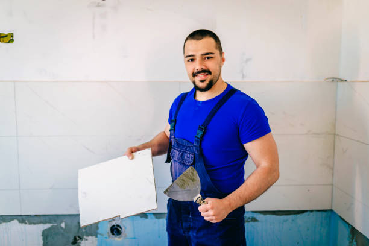

soulaimane ali
Le barbier est un professionnel qui coupe et taille les cheveux et les barbes. Il utilise des outils spécialisés pour offrir des services de coiffure et de rasage.


Ayoub Rachidi
Le menuisier est un artisan qui travaille le bois pour créer des meubles, des structures ou des éléments décoratifs. Il utilise des outils spécialisés pour façonner et assembler le bois avec précision.

soufiane Alaoui
La forge est un métier ancien qui façonne les métaux par chaleur et martelage. Il combine créativité et précision pour créer des outils et structures métalliques.


mehdi tazi
Le métier de serveur offre un revenu stable, des pourboires et développe des compétences clés avec des perspectives d'évolution.

Yasmine nassiri
Le mécanicien est un professionnel qui répare et entretient les véhicules ou les machines. Il utilise des outils spécialisés pour diagnostiquer et résoudre les problèmes mécaniques.

tarek bakkali
Le zellige est un artisan qui pose des carreaux de céramique décorés, utilisés pour décorer murs et sols.

tarek bakkali
Le boulanger est un artisan qui prépare, cuit et vend du pain, des viennoiseries et d'autres produits de boulangerie. Il travaille avec des ingrédients frais pour créer des produits de qualité.

Le cuisinier est un professionnel qui prépare et cuisine des plats dans des restaurants, hôtels ou autres établissements. Il sélectionne les ingrédients, suit des recettes et veille à la présentation des plats.